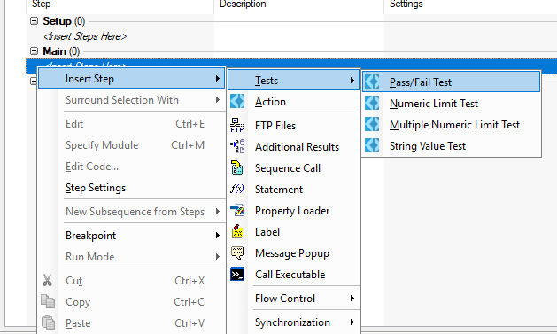
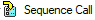
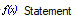
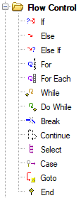
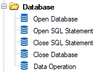
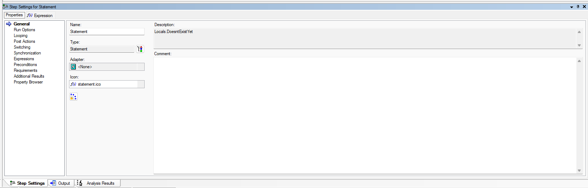
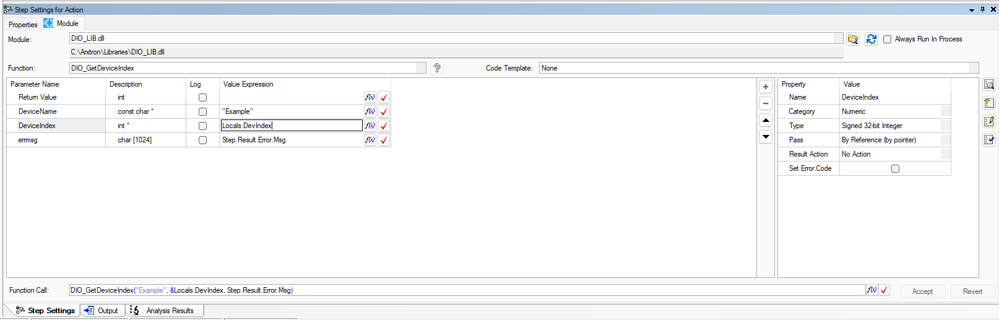

- Generated by
 1.16.1
1.16.1
|
TestStand Crash Course
|
TestStand contains many step types, which can be used to build test sequences. Here are a few of the most commonly used step types:
Calls a code module that does not perform a test. For example, an action step might initialize an instrument to prepare it for testing.
Calls a code module that makes its own pass/fail determination. Note that this module does not appear by default in the Insertion Palette; to insert a pass/fail step, right click the Steps Pane and select Insert Step > Tests > Pass/Fail Test. Within this menu are a few other types of code module tests.

Calls another sequence in the current sequence file or in another sequence file.

Executes a TestStand expression. For example, a statement step can be used to increment the value of a local variable. Note that statement steps do not return a pass/fail status by default; step status can be set in the Step Settings Pane under Properties > Expressions > Status Expression.

Flow control step types implement standard programming branching statements.

Database step types can be used to easily communicate with databases, which is often useful for logging functionality.

To create a test step, simply drag and drop from the Insertion Palette into the Steps Pane. Alternatively, right click within the Steps Pane and select Insert Step > Desired step type.
To edit a step, select it in the Steps Pane and navigate to the Step Settings Pane if it is not already open. Within the Step Settings Pane, there are typically (but not always) two tabs: Properties and Step-Specific Settings. Take some time to try experimenting with these tabs within multiple step types.
The Properties tab is a standard set of properties that appear in all TestStand step types.

There are a few key properties to note, all of which are used often at Arxtron (see Test Step Flow for more details):
Step-Specific Settings vary between test step types.
For example, an Action test step's settings primarily concerns the passing of parameters between TestStand and the code module.
